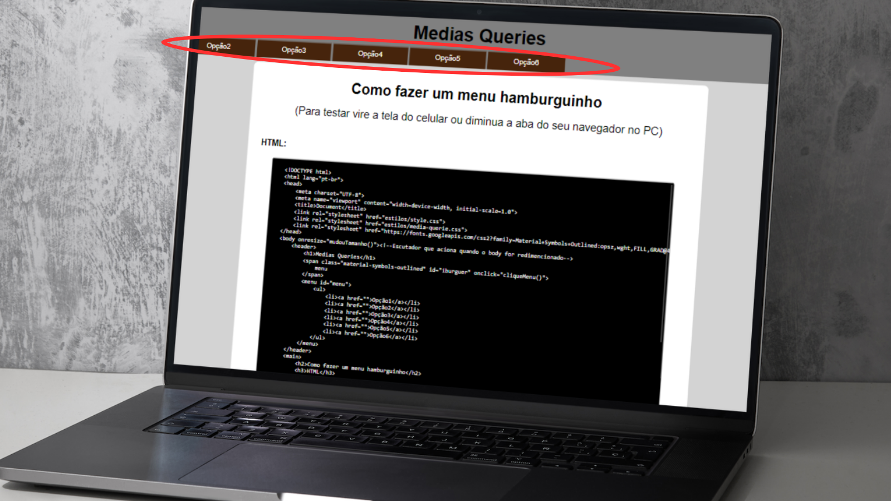

Como fazer um menu hamburguinho
(Para testar vire a tela do celular ou diminua a aba do seu navegador no PC)
Menu em telas grandes:
Menu retrátil em telas pequenas(Menu hamburguinho):
Codigo do projeto
HTML:
CSS:
Arquivo 'style.css'
Arquivo CSS com o estilo principal. Esse projeto foi pensado com base na tecnica do Mobille First que consiste no desenvolvimento do projeto, tendo em vista, primeiro, a utilização em dispositivos móveis, com o estilo principal sendo separado em um arquivo CSS separado e depois feito o estilo para outras mídias em outro aquivo.
Arquivo 'media-querie.css'
Contém os estilos para outras mídias usando a propriedade Media Querie do CSS.